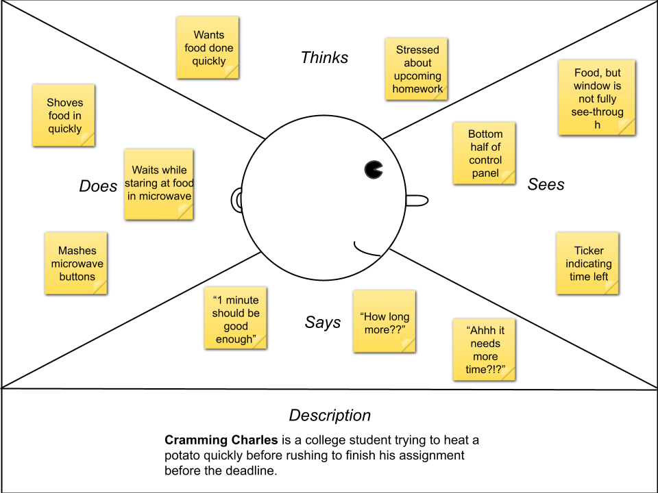
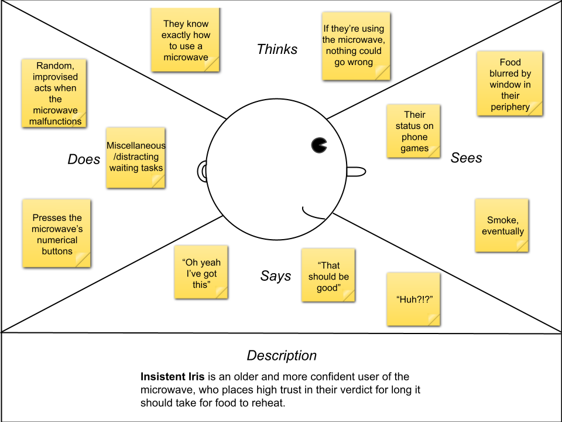
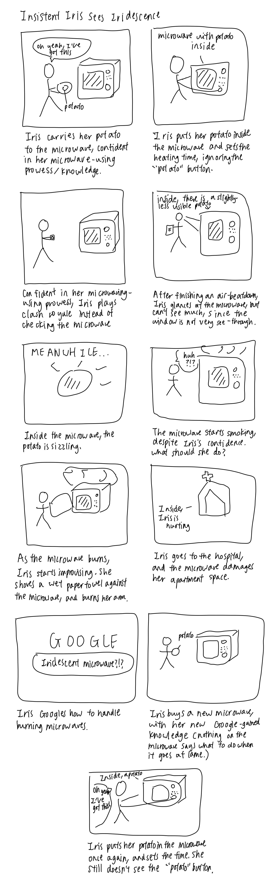

Better understanding how users interact with a microwave
Fig 1. A microwave with a door handle, window, cooking
chamber, and control panel. This interface is used to heat/reheat
food in a fast and convenient manner.
Summary
In order to better understand users’ experiences interacting with a
microwave of the make I sketched above, I observed three different
individuals as they used this device while in public view then asked
them questions about their experiences. Afterwards, I created empathy
maps describing user personas and a storyboard portraying a possible
way users might use this device.
Key Observations
I observed three different users using the microwave to heat up rice
originally in a plastic tupperware. From this, I observed the
following:
Users do not use the top half of the microwave's control panel,
except to check the time.
While waiting for the microwave to finish, users spent a
noticeable amount of time looking through the microwave window but
also on occasion looked at their phone.
From my observations, the only buttons users used were "Start,"
"Stop," and "1."
Some users put the rice in a different container before inserting
it into the microwave, while others left it in a plastic
tupperware.
With little inspection, users knew to pull the microwave's door
handle and put the food they want to heat up inside the cooking
chamber.
Interview Responses
After I observed the users, I asked each of them a few follow-up
questions. Below are the questions I asked, as well as a summary of
users' responses.
If you could choose, would you want the microwave window to be more
or less see-through?
Across the board, users said they would prefer for the microwave
window to be more see-through.
They cited their safety concerns with using the microwave (i.e.,
if the food inside starts to smoke), and that more visibility
would always be preferable to them.
They also cited a general sense of anticipation during the
waiting process that would be assuaged by the microwave window
being more see-through.
How do you know what button to press with the microwave/how long to
press it?
All three users said that they pressed buttons based on how long
they wanted to leave food in the microwave.
They each had a different time in mind (1 minute, 1.5 minutes,
and 2 minutes), but all three said they pressed buttons with
with the intention of heating food for their specified amount of
time.
Users found the numbers in the control panel to be intuitive, as
well as the "Start/Add 30 seconds" button.
The users who used the "Start" button to set time cited their
past experience with different microwaves and clicking on
"Start," while the user who used the number panel cited a
similar experience but with the number section on a microwave
they were familiar with.
How do you know whether an item is microwave-safe?
Users said they did not know whether an item was microwave-safe
based on any information inherently on the microwave itself, but
based on prior knowledge gained by hearsay and personal
experience.
They cited quotes their parents told them, as well as mishaps
that occured when they put microwave-unsafe containers within
the microwave.
They all said they decided whether an item was based safe based
on the container rather than the food itself.
If smoke were to start emerging from the microwave what would be
your go-to procol?
Each user had a different plan—to cover the microwave with a wet
towel, bring out a fire-extinguisher, or even just unplug the
microwave.
Users cited their understanding of fires in general, rather than
instructions on the microwave, as the source of their plan.
Users often riffed off their plans, and improvised as they went.
If you were to use the "potato" switch on the microwave, how
prepared do you think the potato should be before inserting it into
the microwave?
Many users said they did not even notice this switch on the
microwave until I asked this question.
They said they assumed the potato switch would be used for an
unrefridgerated potato, as this was how they most commonly
observed the tuber in their own lives.
They said there was no specification indicating this for them on
the microwave, but just their preconceived notions about the
labels/titles of microwave buttons.
User Personas
After observing users I constructed two different user personas:

Fig 2. This persona is for a user who cannot discern how
long it will take to heat up food for whom there is already a
button on the microwave (a potato). This persona represents the
users I interviewed because users generally did not look at the
top half of the control panel, and were taken aback when I pointed
out that there was a "potato" button, whose functionality is still
opaque.

Fig 3. My second persona is for a user who is insistent
about the amount of time it would take to heat up food with the
microwave, and so might cause their food to smoke. This represents
how the users I interviewed didn't have a unified protocol for
handling smoke from a microwave, or a clear idea of how long to
leave food in the microwave.
Storyboard
Given these personas, I made a storyboard for my second persona
(Insistent Iris). This storyboard considers a user's experience using
a microwave, in particular if they are already familiar with the
microwave, as the individuals I observed were. Given that while
constructing the user persona I kept potential interface problems in
mind, Iris's journey with the microwave has some bumps, but contains
the full arc of a user attempting to use this device.

Thanks for reading! I hope this portfolio entry helped clarify users'
experiences with this particular microwave!